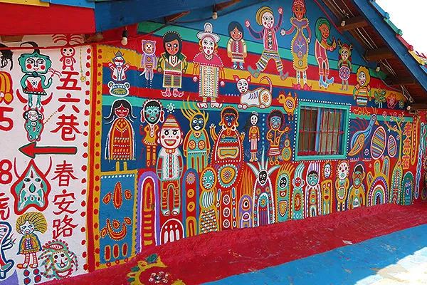
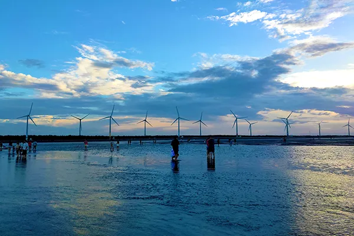
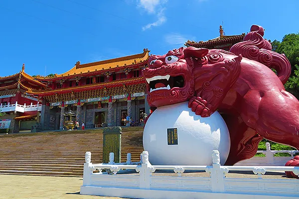
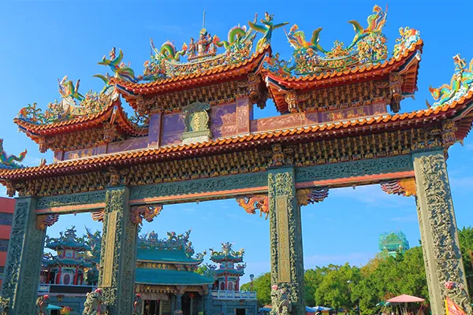
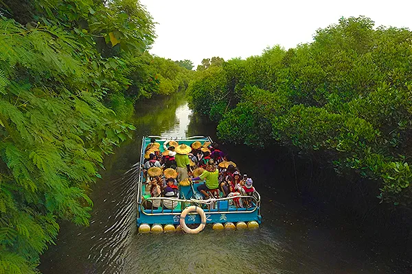
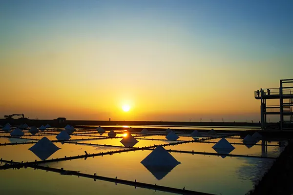
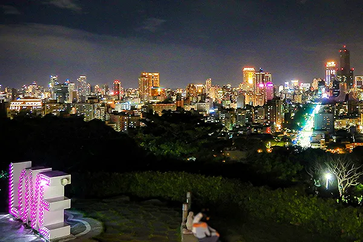
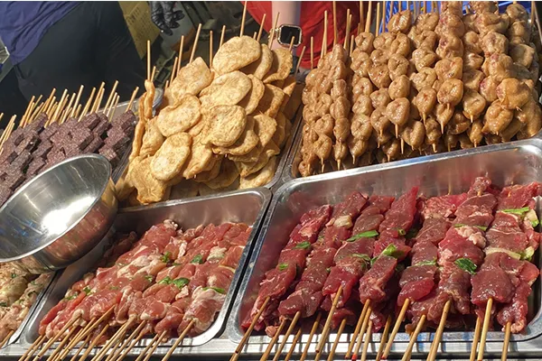
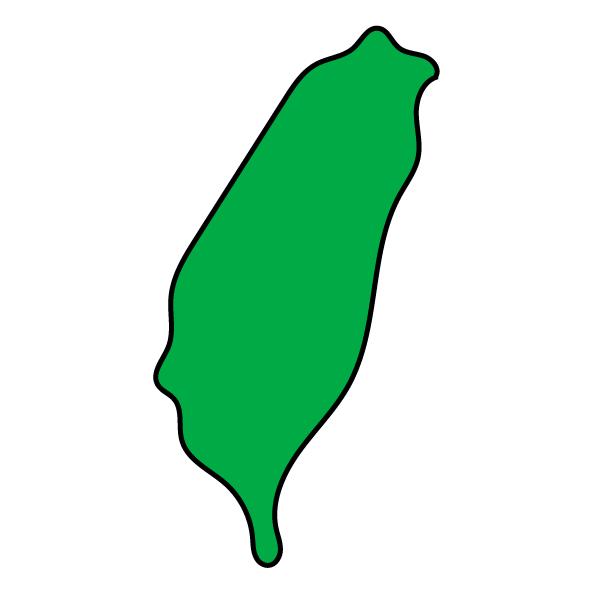

台中 ＆ 台南 ＆ 高雄の旅
おすすめトピック

彩虹眷村
@台中
元軍人・黄さんが描いたカラフルな壁画が魅力のアートスポット。アクセスも良く、台湾の文化と芸術が融合した空間は観光客に大人気。カップルや家族連れにもおすすめの名所です。

高美湿地
@台南
干潟や湿地、風車が織りなす約300～700haの自然保護区。夕焼けに映える「天空の鏡」景観や渡り鳥観察が人気で、SNS映え抜群な台湾絶景スポットとして注目されています。アクセスも台中からバスで便利です

天府宮
@高雄
1660年創建の道教寺院で中壇元帥（哪吒太子）を祀り、蓮池潭畔に位置。石柱や龍虎塔など華麗な建築美が魅力で、観光としても信仰の場としても人気なスポットです
＃芸術
＃寺院

南天宮關帝廟
@台中

南鯤鯓代天府
@台南
梓官大埔福德祠
@高雄
＃自然

四草緑色隧道
@台南

井仔腳瓦盤塩田
@台南
日月潭
@日月潭
＃夜景
望高寮夜景公園
@台中
愛河
@高雄

壽山（柴山）LOVE展望台
@高雄
＃グルメ
宮原眼科
@台南

花園夜市
@台南
六合夜市
@高雄
行きたいところ、見つかった？
